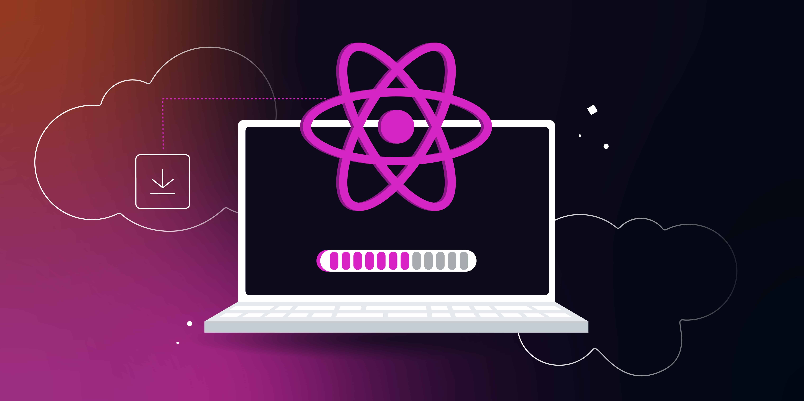

Hur kommer man igång med React?
Att komma igång med React är enklare än det låter. React har ett utvecklarvänligt ekosystem med verktyg och färdiga mallar som gör det lätt att skapa professionella webbapplikationer – även som nybörjare. Här är en steg-för-steg-guide för hur du sätter upp ett React-projekt från grunden.
Steg 1: Installera Node.js och npm
React körs i en JavaScript-miljö som kräver Node.js och npm (Node Package Manager). Node.js är en JavaScript-motor som gör det möjligt att köra JavaScript utanför webbläsaren – exempelvis i terminalen eller servermiljöer.
Gå till nodejs.org och
ladda ner den senaste LTS-versionen (Long-Term Support). När
installationen är klar får du automatiskt tillgång till kommandot
npm, vilket används för att installera paket.
Steg 2: Skapa ett nytt projekt med Create React App
Det enklaste sättet att starta ett React-projekt är med verktyget Create React App (CRA). Det skapar en färdig projektstruktur åt dig med alla konfigurationer redan på plats – så du kan börja koda direkt utan att tänka på webpack eller babel-inställningar.
Öppna terminalen och kör:
npx create-react-app mitt-projekt
Detta laddar ner och genererar en mapp med alla filer du behöver. Du kan
byta ut mitt-projekt till valfritt namn på din applikation.
Steg 3: Starta utvecklingsservern
För att starta din nya applikation, navigera in i projektmappen och kör:
cd mitt-projekt
npm start
Efter några sekunder öppnas en webbläsare automatiskt med din nya
React-app som körs på http://localhost:3000. Detta är din
lokala utvecklingsserver som uppdateras i realtid när du sparar
ändringar i koden.
Steg 4: Redigera din första komponent
I mappen src hittar du filen App.js. Det är
här du börjar skriva din egen React-kod. Testa att byta ut texten inuti
<header> mot något annat – spara filen, och se
resultatet uppdateras automatiskt i webbläsaren tack vare hot reloading.
Bonus: Utforska mappstrukturen
public/– innehåller statiska filer som index.htmlsrc/– här skriver du all din JavaScript/React-kodnode_modules/– alla installerade beroenden-
package.json– lista över projektets beroenden och skript
Tips för nybörjare
-
Du kan installera nya bibliotek med
npm install bibliotek-namn -
Du kan skapa egna komponenter i egna filer och importera dem i
App.js - Använd React DevTools i webbläsaren för att inspektera komponenter och tillstånd
Nu är du igång med React! Fortsätt att utforska funktioner som state, props, events och hooks för att bygga interaktiva och kraftfulla applikationer.
